Frontend · Next.js App Router
giftme-web — เว็บผู้ใช้ แดชบอร์ด และแบ็กออฟฟิศ
เว็บเดียวครอบคลุมสี่กลุ่มหน้าที่แยกด้วย route group: หน้าเข้าสู่ระบบ/สมัคร (auth) · หน้าการตลาดและเอกสาร (landing) · แดชบอร์ดสตรีมเมอร์ หน้าโดเนทสาธารณะ และ overlay (user) · แบ็กออฟฟิศผู้ดูแล backoffice ทุกหน้าใช้ธีมมืดเป็นค่าเริ่มต้น เนื้อหาเป็นภาษาไทย และแสดงวันที่แบบ พ.ศ.
⚙เทคโนโลยี
- Next.js 14.2 (App Router)
- React 18.3
- TypeScript 5.5
- NextUI 2.6
- Tailwind CSS 3.4
- ApexCharts + react-apexcharts
- qrcode.react
- socket.io-client 4.8
- Zod 3 (ตรวจฟอร์ม)
- @t3-oss/env-nextjs
- jose (ถอด JWT ที่ edge)
- framer-motion · animate.css
- react-text-to-speech
- canvas-confetti
- react-toastify · @iconify/react
- axios · lodash
🔗สายเรียก API 4 ชั้น
- ①Server Action
src/actions/{user,backoffice}/*.action.tsประกาศ"use server"· ฟอร์มที่เขียนข้อมูลตรวจFormDataด้วย zodsafeParseแล้วคืน field error ให้useFormState - ②Service singleton
src/services/**ทุกตัว extendsBaseServiceและ export เป็นอินสแตนซ์เดียว เช่นprofileService - ③handleRequestคืน
ServiceResponse<T>={ data }หรือ{ error }เสมอ ไม่เคย throw และเลือกข้อความจาก body ของ backend ก่อนข้อความของ axios - ④backendApi (axios)อินสแตนซ์เดียวใน
src/lib/backend-api.tsที่ interceptor แนบAuthorization: Bearerให้อัตโนมัติ — client component ไม่เคยยิง API เอง - 🍪SessionJWT เก็บใน cookie
sessionแบบ httpOnly ·middleware.tsกัน/dashboard/*และ/backoffice/*โดยถอด token ที่ edge และบังคับบทบาท ADMIN/SUPER_ADMIN สำหรับแบ็กออฟฟิศ
★ฟีเจอร์โดยสรุป
- Landing แนะนำบริการ · วิดีโอสอนใช้งาน · คำถามที่พบบ่อย · เอกสารข้อกำหนดและนโยบาย
- สมัคร / เข้าสู่ระบบ อีเมล + รหัสผ่าน หรือ Streamlabs · ยืนยันอีเมล · ลืมรหัสผ่านพร้อมลิงก์หมดอายุ 15 นาที
- สถิติ กราฟยอดโดเนทราย วัน / เดือน / ปี ด้วย ApexCharts ส่งออกเป็นรูปหรือ CSV ได้
- บัญชีผู้ใช้ แก้โปรไฟล์ · เปลี่ยน/ยืนยันอีเมล
- บัญชีธนาคาร ยื่นเอกสาร KYC (บัตรประชาชน · เซลฟี่คู่บัตร · หน้าสมุดบัญชี) และติดตามสถานะการตรวจ
- วิธีชำระเงิน เปิด‑ปิด PromptPay / TrueWallet / LINE Pay พร้อมกำหนดยอดขั้นต่ำต่อช่องทาง
- หน้าโดเนท ตั้งชื่อ รูปโปรไฟล์ แบนเนอร์ ภาพพื้นหลัง ลิงก์ และข้อความตอนสำเร็จ/ไม่สำเร็จ
- ตกแต่งแจ้งเตือน ปรับ overlay ทั้งสี่ตัว พร้อมตัวอย่างสดและปุ่มทดสอบยิงเข้า OBS
- รายการโดเนท / ใบเสร็จ ค้นหา กรองตามช่องทางหรือสถานะ และแบ่งหน้า
- แบ็กออฟฟิศ จัดการผู้ใช้ · ตรวจอนุมัติบัญชีธนาคาร · รายการจ่ายเงิน · สถิติรวมทั้งระบบ
- หน้าโดเนทสาธารณะ ไม่ต้องล็อกอิน กรอกชื่อ ข้อความ ยอดเงิน แล้วรับ QR PromptPay พร้อมนับถอยหลังและเช็กสถานะอัตโนมัติ
ภาพหน้าจอ — ผู้ใช้และสตรีมเมอร์
14 หน้าจอ · คลิกเพื่อขยาย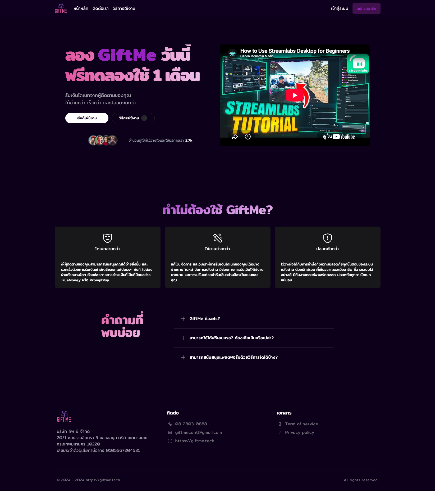
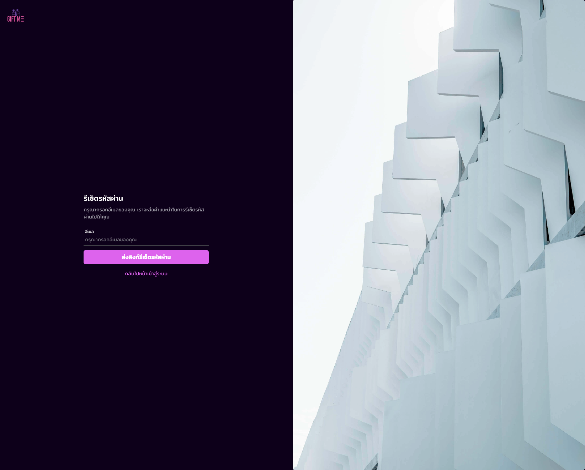
(auth)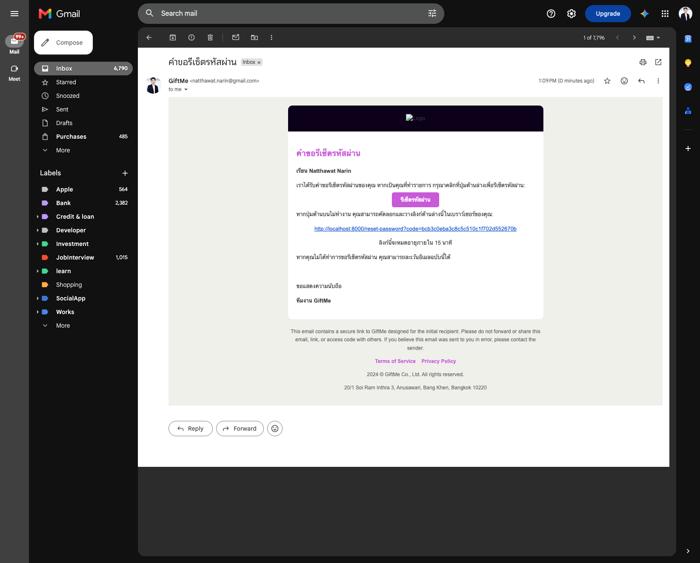
EmailService · ปุ่มรีเซ็ตพร้อมลิงก์สำรองที่มี code และหมดอายุใน 15 นาที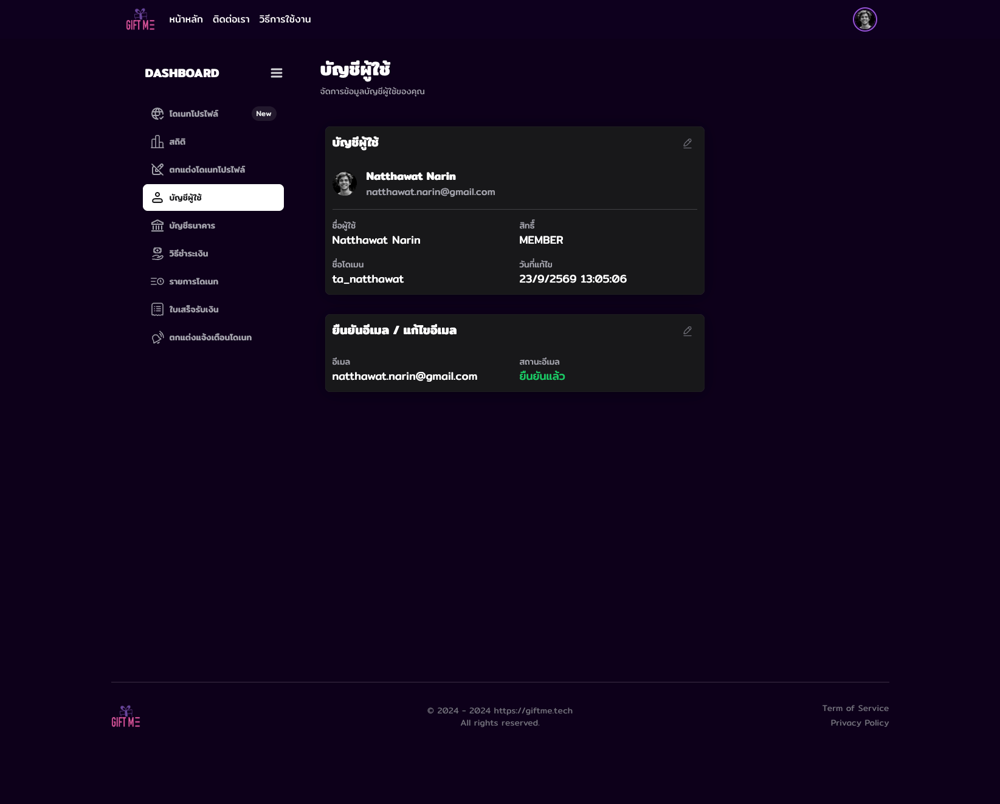
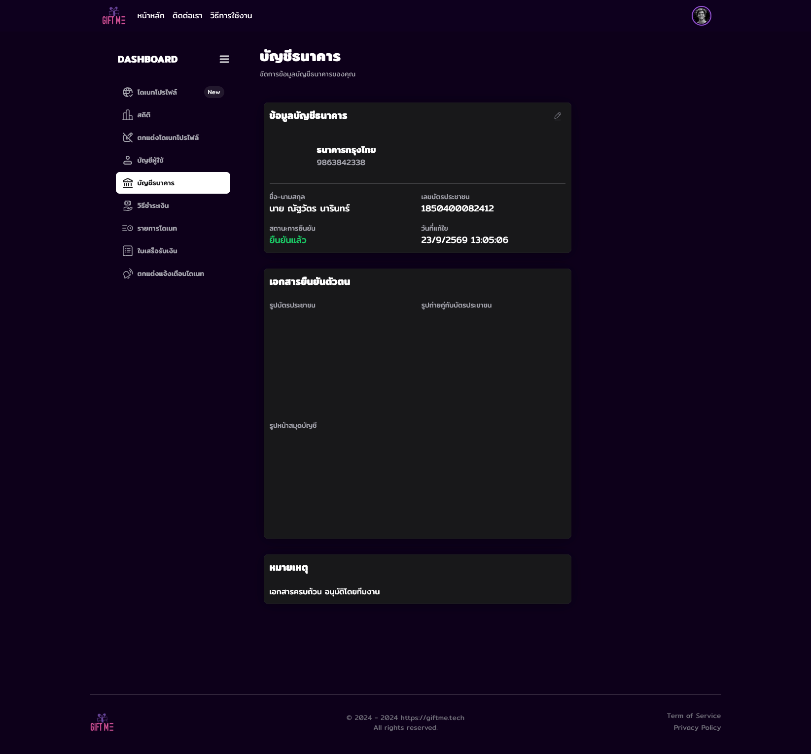
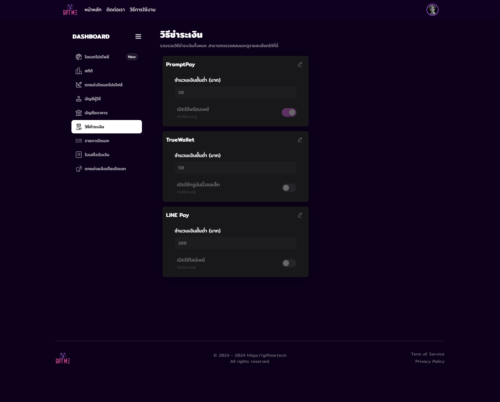
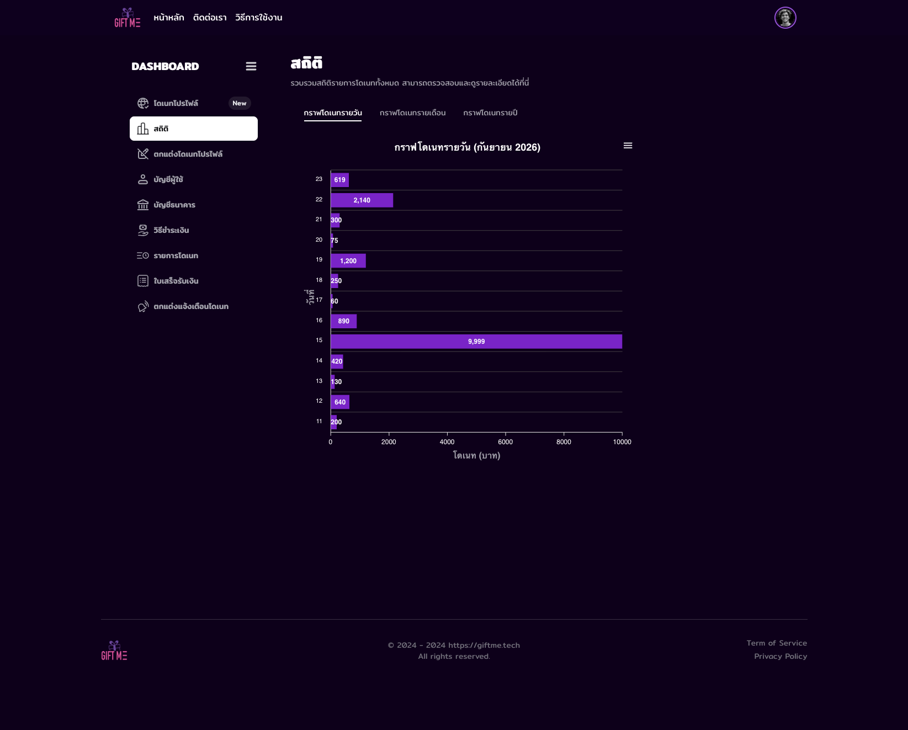
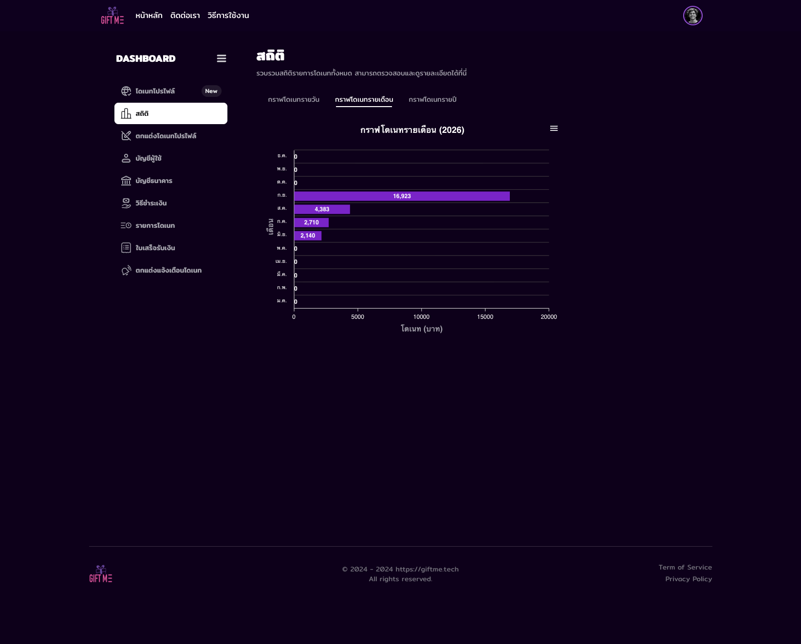
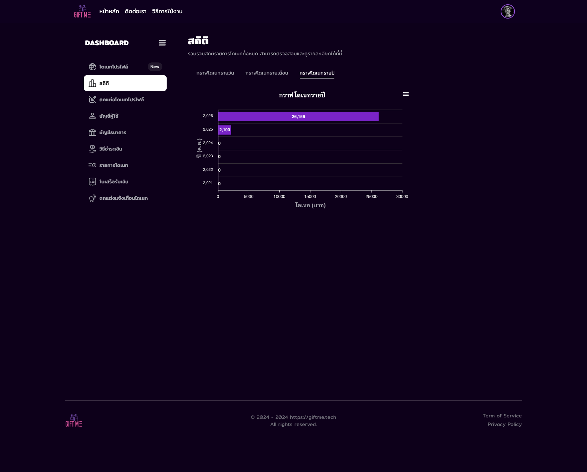


TX… ยอดรวม ค่าธรรมเนียม และสถานะ (รอตรวจสอบ · อนุมัติแล้ว · ไม่อนุมัติ) ที่ cron สร้างให้ทุกต้นเดือน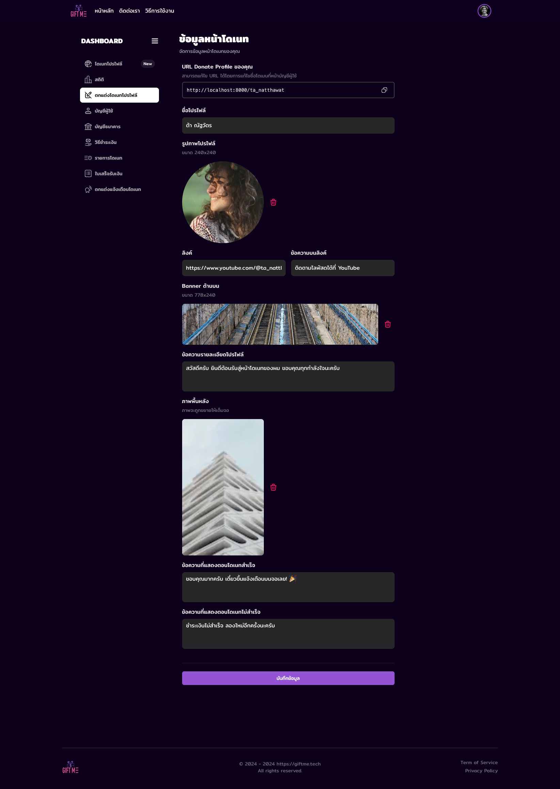
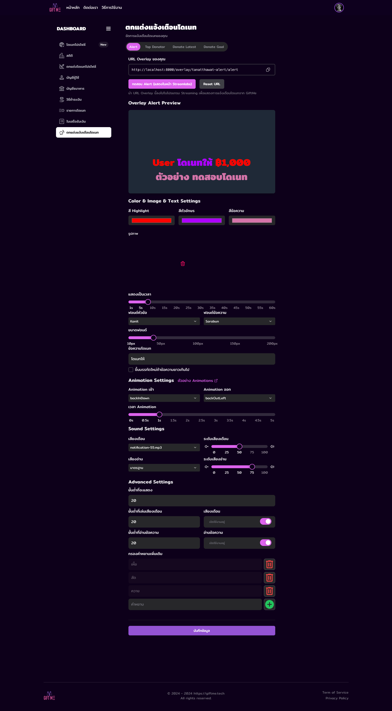
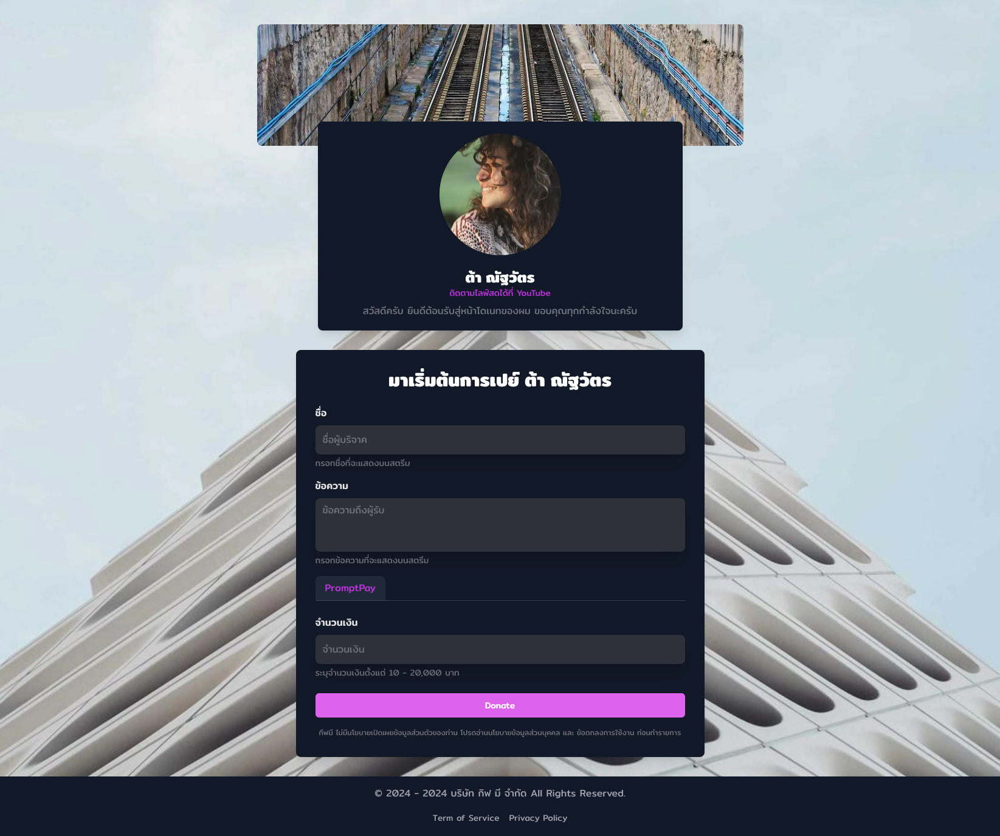
/[username]แบนเนอร์ รูปโปรไฟล์ ลิงก์ และข้อความต้อนรับที่สตรีมเมอร์ตั้งไว้ · ฟอร์มชื่อ ข้อความ ช่องทาง และยอดเงินตามขอบเขตที่กำหนดภาพหน้าจอ — แบ็กออฟฟิศ
6 หน้าจอ · เข้าถึงได้เฉพาะบทบาท ADMIN และ SUPER_ADMIN
bo/donations/analytics/* ซึ่งรวมโดเนทของผู้ใช้ทุกคน